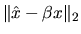
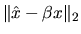

LAPACK routines return four types of floating-point output arguments:
First consider scalars. Let the scalar  be an approximation of
the true answer
be an approximation of
the true answer  .
We can measure the difference between
.
We can measure the difference between  and
and  either by the absolute error
,
or, if
either by the absolute error
,
or, if  is nonzero, by the relative error
.
Alternatively, it is sometimes more convenient
to use
is nonzero, by the relative error
.
Alternatively, it is sometimes more convenient
to use
 instead of the standard expression
for relative error (see section 4.2.1).
If the relative error of
instead of the standard expression
for relative error (see section 4.2.1).
If the relative error of  is, say 10-5, then we say that
is, say 10-5, then we say that
 is accurate to 5 decimal digits.
is accurate to 5 decimal digits.
In order to measure the error in vectors, we need to measure the size or norm of a vector x. A popular norm is the magnitude of the largest component, , which we denote . This is read the infinity norm of x. See Table 4.2 for a summary of norms.
If  is an approximation to the
exact vector x, we will refer to
as the
absolute error in
is an approximation to the
exact vector x, we will refer to
as the
absolute error in  (where p is one of the values in Table 4.2),
and refer to
as the relative error
in
(where p is one of the values in Table 4.2),
and refer to
as the relative error
in  (assuming
). As with scalars,
we will sometimes use
for the relative error.
As above, if the relative error of
(assuming
). As with scalars,
we will sometimes use
for the relative error.
As above, if the relative error of  is, say 10-5, then we say
that
is, say 10-5, then we say
that  is accurate to 5 decimal digits.
The following example illustrates these ideas:
is accurate to 5 decimal digits.
The following example illustrates these ideas:
Errors in matrices may also be measured with norms.
The most obvious
generalization of
to matrices would appear to be
,
but this does not have certain
important mathematical properties that make deriving error bounds
convenient (see section 4.2.1).
Instead, we will use
,
where A is an m-by-n matrix, or
;
see Table 4.2 for other matrix norms.
As before
is the absolute
error
in ,
is the relative error
in ,
and a relative error in
of
10-5 means
is accurate to 5 decimal digits.
The following example illustrates these ideas:

Here is some related notation we will use in our error bounds.
The condition number of a matrix A is defined as
,
where A
is square and invertible, and p is  or one of the other
possibilities in Table 4.2. The condition number
measures how sensitive A-1 is to changes in A; the larger
the condition number, the more sensitive is A-1. For example,
for the same A as in the last example,
or one of the other
possibilities in Table 4.2. The condition number
measures how sensitive A-1 is to changes in A; the larger
the condition number, the more sensitive is A-1. For example,
for the same A as in the last example,
Now we consider errors in subspaces. Subspaces are the
outputs of routines that compute eigenvectors and invariant
subspaces of matrices. We need a careful definition
of error in these cases for the following reason. The nonzero vector x is called a
(right) eigenvector of the matrix A with eigenvalue
 if
.
From this definition, we see that
-x, 2x, or any other nonzero multiple
of x is also an
eigenvector. In other words, eigenvectors are not unique. This
means we cannot measure the difference between two supposed eigenvectors
if
.
From this definition, we see that
-x, 2x, or any other nonzero multiple
of x is also an
eigenvector. In other words, eigenvectors are not unique. This
means we cannot measure the difference between two supposed eigenvectors
 and x by computing
,
because this may
be large while

is small or even zero for
some .
This is true
even if we normalize x so that |x|2 = 1, since both
x and -x can be normalized simultaneously. So in order to define
error in a useful way, we need to instead consider the set
and x by computing
,
because this may
be large while

is small or even zero for
some .
This is true
even if we normalize x so that |x|2 = 1, since both
x and -x can be normalized simultaneously. So in order to define
error in a useful way, we need to instead consider the set  of
all scalar multiples
of
x. The set
of
all scalar multiples
of
x. The set  is
called the subspace spanned by x, and is uniquely determined
by any nonzero member of
is
called the subspace spanned by x, and is uniquely determined
by any nonzero member of  .
We will measure the difference
between two such sets by the acute angle between them.
Suppose
.
We will measure the difference
between two such sets by the acute angle between them.
Suppose  is spanned by
is spanned by  and
and
 is spanned by .
Then the acute angle between
is spanned by .
Then the acute angle between
 and
and  is defined as
is defined as
Here is another way to interpret the angle  between
between  and
and
 .
Suppose
.
Suppose  is a unit vector (
).
Then there is a scalar
is a unit vector (
).
Then there is a scalar  such that
such that

Some LAPACK routines also return subspaces spanned by more than one vector, such as the invariant subspaces of matrices returned by xGEESX. The notion of angle between subspaces also applies here; see section 4.2.1 for details.
Finally, many of our error bounds will contain a factor p(n) (or p(m,n)), which grows as a function of matrix dimension n (or dimensions m and n). It represents a potentially different function for each problem. In practice, the true errors usually grow just linearly; using p(n)=10n in the error bound formulas will often give a reasonable bound. Therefore, we will refer to p(n) as a ``modestly growing'' function of n. However it can occasionally be much larger, see section 4.2.1. For simplicity, the error bounds computed by the code fragments in the following sections will use p(n)=1. This means these computed error bounds may occasionally slightly underestimate the true error. For this reason we refer to these computed error bounds as ``approximate error bounds''.